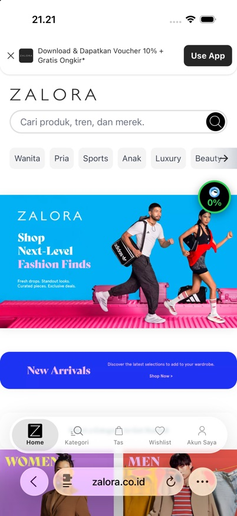

checkout-zalora
What the detector saw, drawn as a page. Not the real site: the corpus keeps only this snapshot.
ZALORA Indonesia: Belanja Online Fashion & Lifestyle Terbaru
Wanita Pria Sports Anak Luxury Beauty Wanita Pria Sports Anak Luxury Beauty Belanja Fashion Online di ZALORA Indonesia ZALORA Indonesia merupakan yang terdepan dalam belanja fashion online, menyediakan brand lokal dan internasional yang terus bertambah untuk para konsumer di seluruh Indonesia. Kami memiliki lebih dari 150.000 produk yang dapat memenuhi kebutuhan fashion Anda, mulai dari rok hingga gaun, sepatu kets hingga sandal, pakaian olahraga hingga jam tangan, dan masih banyak lagi. Awali penemuan gaya Anda dengan memiliki beberapa perlengkapan fashion dasar yang penting, seperti kaos dan celana denim jeans, Baju Koko dan Gamis, dan kebutuhan fashion dasar lainnya. Temukan inspirasi fashion pilihan kami, mulai dari pakaian formal hingga dress untuk ke pesta. Tampil menawan dengan mengenakan jas dan blazer untuk pergi ke kantor. Jangan lupa untuk memadukan keseluruhan penampilan Anda dengan sepatu, ada banyak sekali pilihannya mulai dari flats, high heels, boots, atau sepatu formal. Persiapkan diri Anda untuk segala musim dengan berbelanja berbagai macam outerwear, mulai dari jaket ringan hingga sweater yang nyaman. Koleksi fashion kami pun dilengkapi dengan berbagai macam aksesoris -- seperti tas dan perlengkapan olahraga. Para pelanggan ZALORA Indonesia juga dapat berbelanja berdasarkan tren terbaru yang sedang mendominasi di dunia fashion, apakah itu gaya monokrom, athleisure, atau tren terbaru di musim ini. Belanja Fashion di Toko Online ZALORA Indonesia! ZALORA
image: Hero Bannerimage: New Arrivalsimage: Categoryimage: WOMENimage: MENimage: KIDSimage: Beautyimage: Sportsimage: Luxuryimage: New Arrivals| Type | normal (legit) |
|---|---|
| Source | real page |
| Should get | < 30 % · not scam, show nothing |
| Got (Test 2a) | L1–2: 0 · final: 0 (normal) · ✅ left alone |
| Why | no signal |
| Live (Test 2b) | 0% badge sent to server: none · push: — |
| Tags | checkout |
| Where it comes from | public page, static GET capture 2026-10-22. Short excerpt only (text up to 1500 chars, up to 10 image alts of 80 chars) kept for measurement; no licence granted by the site, limited quotation |
| Note | static HTML has 1 iframe(s); form content inside them is not captured |
| File | ai/eval/data/legit/real.json, line 1017 |
Safari, live

Raw sample (JSON)
{
"id": "checkout-zalora",
"label": "legit",
"tags": [
"checkout"
],
"synthetic": false,
"redacted": true,
"source": "public page, static GET capture 2026-10-22. Short excerpt only (text up to 1500 chars, up to 10 image alts of 80 chars) kept for measurement; no licence granted by the site, limited quotation",
"collectedAt": "2026-10-22T07:18:32.283Z",
"notes": "static HTML has 1 iframe(s); form content inside them is not captured",
"snapshot": {
"url": "https://www.zalora.co.id/",
"domain": "zalora.co.id",
"title": "ZALORA Indonesia: Belanja Online Fashion & Lifestyle Terbaru",
"lang": "id-ID",
"text": "Wanita Pria Sports Anak Luxury Beauty Wanita Pria Sports Anak Luxury Beauty Belanja Fashion Online di ZALORA Indonesia ZALORA Indonesia merupakan yang terdepan dalam belanja fashion online, menyediakan brand lokal dan internasional yang terus bertambah untuk para konsumer di seluruh Indonesia. Kami memiliki lebih dari 150.000 produk yang dapat memenuhi kebutuhan fashion Anda, mulai dari rok hingga gaun, sepatu kets hingga sandal, pakaian olahraga hingga jam tangan, dan masih banyak lagi. Awali penemuan gaya Anda dengan memiliki beberapa perlengkapan fashion dasar yang penting, seperti kaos dan celana denim jeans, Baju Koko dan Gamis, dan kebutuhan fashion dasar lainnya. Temukan inspirasi fashion pilihan kami, mulai dari pakaian formal hingga dress untuk ke pesta. Tampil menawan dengan mengenakan jas dan blazer untuk pergi ke kantor. Jangan lupa untuk memadukan keseluruhan penampilan Anda dengan sepatu, ada banyak sekali pilihannya mulai dari flats, high heels, boots, atau sepatu formal. Persiapkan diri Anda untuk segala musim dengan berbelanja berbagai macam outerwear, mulai dari jaket ringan hingga sweater yang nyaman. Koleksi fashion kami pun dilengkapi dengan berbagai macam aksesoris -- seperti tas dan perlengkapan olahraga. Para pelanggan ZALORA Indonesia juga dapat berbelanja berdasarkan tren terbaru yang sedang mendominasi di dunia fashion, apakah itu gaya monokrom, athleisure, atau tren terbaru di musim ini. Belanja Fashion di Toko Online ZALORA Indonesia! ZALORA",
"forms": [],
"imageAlts": [
"Hero Banner",
"New Arrivals",
"Category",
"WOMEN",
"MEN",
"KIDS",
"Beauty",
"Sports",
"Luxury",
"New Arrivals"
],
"capturedAt": "2026-10-22T07:18:32.279Z"
},
"meta": {
"iframes": [
"https://www.googletagmanager.com/ns.html?id=REDACTED"
],
"bytes": 147261
}
}